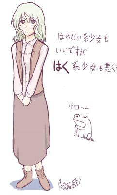

シルバーセカンド開発日誌
■
2014-09-13 (土) 片道+ 50 淡々と進行▼
ただいま限界ギリギリの速度で最終作業を進めています。
普段の開発速度は主観的にちょっと遅い方だと思っていましたが
どうやらそれが疲労がたまらないギリギリだったようで、
今のペースだとちょっとずつ疲れが溜まっています。
うまく疲れを減らす工夫も身につけたいですね。
今回は現状の片道勇者プラスの
プレイ紹介動画を撮ってみました。
片道勇者プラスは、インターフェース面でいくらか強化されています。
◆敵の方向や距離を示すマーカーが見やすくなった（ぬるぬる動きます）。
◆敵が近くにいると「！」が出て操作が停止されるオプションが付いた
（操作停止なし・ウェイトなしに変更することもできます）
→ ついでに敵の位置をエフェクトで分かりやすく表示
◆ショートカット機能が付いた（動画内ではやや無理に使ってます）
他にも、しょっちゅう出てくるメッセージ（特に魔王のセリフ）を瞬間表示にしたり、
細かいところでプレイアビリティの向上を目指しています。
なるべく今月中にはベータ段階まで行って、
まずバランス調整に向けた自己テストプレイを始めていく考えです。
ということで、割と急ぎ気味なので今回の記事は短めで。
引き続きボチボチ進めていきます。
まとまった情報は、少し開発が楽になった頃に
プラス版公式サイトを作りますので少々お待ちください！■
2014-09-06 (土) 片道+ 49 スパート▼
諸処の都合により、遅くても約50日以内に一通り完成させて
内々のテストをし始めた方がいい状況になってきたので、
張り切ってラストスパート中です。
ですが、試しにこの2日間がんばってみても、
どんどんバグが出てきてゴールまでの距離がなかなか縮まらないので
最速目標の一ヶ月で終わる気がしなくなってきました。
できるところまでがんばってみます。
なお、「やれば分かる」頻度のバグ取りを行うために内々のテストが
やや長くなると思いますので、早期アクセス版はまだまだ先です。
さて、今回は片道勇者プラスで新実装されるクラスの、
何度目かのご紹介！ というかまた観光客です！
観光客 B
観光客 Bはメガネの女性です。
最初はカメラを持っていたのですが、
世界観に合わないとのコメントをいただいたので
持ってるものが「旅行記」になりました。
（まあ、結局カメラっぽいなにかをスキルで使用するんですが）
観光客は最弱クラスで、当初はスキルを何も持たない予定でした。
が、片道勇者は初期スキルを駆使して危機的局面を打開することが
攻略のメインとなるゲーム性だったので、スキルも何も無しだと、
詰みが多すぎてあまり面白くない状態になっていました。
そこで今週、調整作業の中で観光客に
「周囲3x3マスの敵を目くらましにする」技、
「小箱からの閃光（仮）」を実装してみました。
※パロディネタです。カメラじゃなくてあくまで謎の小箱
使ってもやっぱり20％くらいの確率で攻撃を受けるので死ぬときは死にますが、
何もできずに死ぬという事態は少し減りました。
運試しすらできないまま詰み状態の未来が見えると、
自分のせいというより不条理感の方が強くなってきてしまいますからね。
以下は気になった拍手コメント返信です、いつもありがとうございます！
＞バグ、というか不具合でしょうか、報告です。
＞10000km到達時にリプレイデータを残したのですが、
＞そのリプレイデータ、だいたい6400km地点から
＞地形が表示されなくなりました。再現性は不明です
情報ありがとうございます！
プラス版でも発生するとかなり困るので、よく調査してみます。
＞以前の記事で眼帯ないとアルバートと分からないとありましたが、彼が
＞眼帯を外すタイミングっていつなんでしょう・・・寝る時って外すのかな
メガネよりも邪魔にならないので、寝る時も
付けっぱなしかもしれませんね。アイマスク的な感じで。■
2014-08-30 (土) 片道+ 48 終わりへ▼【片道勇者+ その48】 終わりに向けて
片道勇者プラスは開発の終わりに向けて地味に進行中です。
残りは調整や遊びやすさ向上、バグ修正が主で、
それが終われば内々のテストに入ります。
色々脇の作業が入ることを考えると、まだ2ヶ月くらいかかるでしょうか。
そして、そのテストでまた一ヶ月分くらいの作業がドバーっと
発生するところまでは織り込み済みです。
「テストしたらリリースだー」なんて甘い考えで何度後悔したことか！
テスト期間は十分に取りましょう。
さて、今回は新しい仲間のご紹介！
片道勇者+では2人の新キャラクターが仲間になります。
今回は、そのうちの片方をご紹介します。
不幸な少女ミラ

ミラは、シルフェイド幻想譚のウリユのように、
不幸な展開を迎えると仲間になる少女キャラです。
可憐な少女が仲間になる状況なんて、死んじゃうか
行き場がなくなる以外のケースが想像できないのでもう定番です。
これで死臭と獣臭しかしないヒロイン群に普通の人間が追加されます！
やったね！
以下は気になった拍手コメント返信です、いつもありがとうございます！
＞制作の方、ご苦労様です。お答えしづらい質問かもしれませんが、 .
＞作者様にお金が入りやすい方はやはり公式サイトからの購入でしょうか？ .
＞作者様を応援したく思っているのでより支援できる方を買いたいと思っています。
ありがとうございます！
資金援助目的でしたら、公式サイトからの購入が一番お金が入ると思います。
だいたい、企業が一つ間にはさまるごとに私に届くお金が
3割（アプリのショップはこれが多いですよね）～■割目減りしていく感じです。
＞今さらではありますけれど、片道勇者も含めたウディタ製ゲーム。 .
＞Game.exeってウディタ自体の更新時に差し替えとくべきなのでしょうか？
Game.exeはバグが起きてないなら古いままでも問題ないと思います。
＞片道勇者でボタンが押しっぱなしになる不具合があるようです。
ギャアア！ 直したと思ったら最新版のEXEがそのままでした！
また整理し直してアップします！ ご迷惑をお掛けしました。
なお、ボタンが押しっぱなしになってしまうのはゲーム中に
「Altキーを押してもゲームが止まらない」バージョンです。
Altを押して止まるならおそらく安全です。
＞ウルフエディタ製のゲームで同じキーを二回以上押したら .
＞二回以降反応しなくなるようになってしまいました .
＞最初はそれを確認したゲームだけかと思いましたが .
＞ウルフエディタ製でキーボードを使うものを他にも試したところ
＞どれも同じ現象が起きたのでご相談願います .
私も聞いたことがない症状なので、もし直せたという方がおられましたら
他の方でも情報をいただけますと幸いです。もしかしたら、Windoswの
サポート機能にボタン押しっぱなし的な機能があったかもしれませんので、
そちらを見ていただくのも何か見つかるかもしれません。
↓
◆サポート掲示板にてスターロード様よりアドバイスをいただきました！
以下をチェックしてみてください。
キーボードで同じキー２回連続で入力すると２回目以降が
入力されない件については、Windows側の原因であるならば
フィルタ キー 機能 がオンになっているのが原因と思われます。
コントロールパネルのユーザー補助のオプションが初期設定だと
Shiftキーを８回連続で入力するとオンになります。
同じ操作（シフト８回連続）をするかコントロールパネルのユーザー補助の
オプションでフィルタ キー機能をオフにすれば治ると思います。 ■
2014-08-16 (土) 片道+ 47 バグ修正▼【片道勇者+ その47】 バグ修正作業

眼帯がなかったら誰か分からない気がします
今週は、より遊びやすいようにする調整やバグ修正の作業がメインでした。
ということで、あまり目玉情報はありません。
たとえば、報告してもしょうがない話ですが、色々な処理のミスで
「通常攻撃」の攻撃力がオリジナル版よりも9点も増えて
「普通」モードが「難しい」モードくらいの難易度に
なってしまっていたのを修正していました。
このゲーム、初期LIFEが100ちょっとしかないので、
本来10ダメージを与えてくる野犬の攻撃が
20ダメージになるだけで大騒ぎです。
敵が隣に2体いる場合、本来4ターン受けても平気なところが
2ターンまでしかもたなくなるので、集団戦が大変になります。
3体が相手になれば、運良くかわせない限りLIFE100だとまず死にます。
プラス版では敵がたくさん出現するシーンが増加したため、この影響で
敵を一撃で倒しやすい「剣士」以外のクラスの難易度が跳ね上がっていました。
私自身が「普通モードがオリジナル版よりやたら楽しくなったなあ！」
と感じたのはこのためだったようです。
修正後は割と気楽に遊べる程度になりました。
イージーモードからステップアップしてもらう目的のノーマルモードとしては、
作者が遊んでほんの少し退屈に感じるくらいが
ちょうどいいかなと思っています。
開発しているときはよくそれを忘れて、大変なことになりがちですね。
以下は気になった拍手コメント返信です、いつもありがとうございます！
＞かよわいイメージがプリンセス…。つまり、ネムリの方が
＞プリンセス適正が高いんですね！？ ネムリ姫！ .
ゲームシステム的に見ると、まさにそうだと思います。
泥臭い役目をさせたかったのでネムリはお姫様になりませんでしたが、
後衛ヒーラーのお姫様というのは海外でも通用しやすい
一種の理想系かもしれませんね。
＞片道勇者＋はいくらくらいになりますか？
ショップやお買い上げ方法によって値段が変わると思いますが、
円換算で500円～999円の範囲内におさまると思います。 ■
2014-08-09 (土) 片道+ 46 次の段階▼
ウディコンの運営をしつつ、この二週間で、
「片道勇者＋を購入するところからクリアまで一通りできる」
状態まで開発を進めることができました。
残す作業はいよいよあと2つ、「大量のデータ追加」と「ブラッシュアップ」です。
ローグライクの面白さ・寿命に関わる部分として
ここが一番の肝ですので、気を抜かずに行きたいところです。
今週のデータ追加の中では、仲間キャラの会話を1段階だけ増やしました。
好感度が非常に高くなると、主人公に技を教えてくれたり、
仲間自身が技を身につけたりします。
仲間の技というのは、たとえばフリーダ王女なら
たまに「連続攻撃」してくれるようになったり、
傭兵パンティが「敵を防御ダウン」させて与ダメージを1.5倍にする技を
使ったりと、従来よりも明確に強化されます。
また仲間に関する他の調整として、
成長した仲間が従来ではちょっと強すぎたことに対し、
プラス版では仲間の「耐久力」や「攻撃力の上がり方」が
中衛クラスの主人公とおおよそ同じくらいになるよう修正を加えています。
パラメータ的には、ある程度弱体化されると思います。
その代わりといっては何ですが、
プラス版では「仲間のLIFEが自然回復」する予定です。
うまく使えばこれまで以上に盾として活用することができるでしょう。
従来では回復アイテムの分しか仲間のLIFEを上げられなかったため、
いくら仲間の最大LIFEが上がろうが、使える耐久力は結局
「回復力」分しかないのと同じでしたからね。
というような感じで、ぼっちらぼっちら開発進行中です。
まだまだリリース日を出せる感じではありませんので、
構えずゆっくりお待ちいただけると幸いです。
【アップデートのお知らせ】
片道勇者のフリー版をVer1.722にアップデートしました。
以下の修正を行っております。
・槍の連続攻撃が2回ずつ増えてしまうバグ
・状況によってクリアフラグがオフになるかもしれない
バグの抑制を試みました。■
2014-07-19 (土) 片道+ 45 中間報告▼【片道勇者+ その45】 中間報告
今回は現在の開発状況についてお知らせします。
現在、リリースするために「最低限」必要な作業をこなしています。
「最低限」必要な作業というのは、これを終えさえすれば
「いつリリースしても一見完成品のように見える」という意味の作業です。
追加したい要素やインターフェース調整、バランス調整の項目は
まだまだ山ほど残っていますので、リリースはまだ先です。
今週の作業で、「一通り特殊エンド用のエンドロールを作り終わった」り、
「全クリアの特典アイテムを作って実装」したり、
「プレイ履歴に各クリアの履歴がちゃんと残るよう実装」したりしていました。
ウディコンを前にして周囲の開発気分も非常に高まっているせいか、
速度としては絶好調です。周囲のやる気の熱は伝わりますね。
そして、残りの「最低限必要な作業」としては、
・仲間を1人増やす（プラス版では計2人のエピローグ付き仲間が増えます）
・販売に関するライセンス処理を実装する
の2つです。ただ、どこかに実装漏れなどがありそうな気もするので、
その点については注意深くチェックする必要がありそうです。
とはいえ、経験上ここまで来ちゃうと、もう色々と見慣れてしまって
記憶をゼロにしないと気付かない問題が多いんですけれどね。
【ウディコンについて】
いよいよ7/27(日)頃から第六回ウディコンの作品募集が始まります！
今回は、少しコンパクトな規模でお送りできるんじゃないかなと
（運営負担的に）期待しています。
未発表の自信作をお持ちの方はぜひどうぞ！
WOLF RPGエディターコンテスト公式サイト
http://www.silversecond.com/WolfRPGEditor/Contest/（新ウィンドウ）
以下は気になった拍手コメント返信です。
皆さまの拍手コメント、いつもありがとうございます！
＞片道勇者+ですが、公式サイトで購入したあと、Steamのほうで .
＞リリースされたら移行といった感じで移せたりはするのでしょうか？
まず、公式サイト版とSteam版の両者間の「セーブデータの移行」は可能です。
今のオリジナル版でも、セーブデータのフォルダの中身をコピーすれば
そのままSteam版で遊ぶことができます。
（ただし、今のバージョンでパーフェクトクリアしちゃってると、
「次元倉庫拡張」や「特徴を解放」したという
一部の実績が手に入らない場合があります）
ソフトのライセンスについては、各々で買い直す必要があります。
うちのサイトでお買い上げの場合はたぶんSteam用のキーが付きません。
ですが、うまいことお得なコースもご提案できるよう考え中です。
うまく話がまとまれば、公式ライセンスとSteamキーの両方を
お安く購入できるプランをご提案できると思いますので、
早まってウェブマネーをお買い上げにならないでくださいね！ ■
2014-07-12 (土) 片道+ 44 販売形式▼【片道勇者+ その44】 販売について
ついに、オリジナル部分の開発と修正記事の数よりも、
プラス版の記事ナンバーの方が多くなってしまいました。
かなり気が早いですが、今回は片道勇者+の
販売形式についてのご案内をさせていただきます。
基本的には、「片道勇者プラス」を遊ぶためにはどんな形であれ
新たな追加料金をお支払いいただく必要がございます。
詳しくは以下の通りです。
【SilverSecond公式サイトでの販売】
まず日本語版が完成した時点で、うちのサイト（＋α）で
片道勇者プラスの早期アクセス版（※いわゆる有料ベータ版）を販売予定です。
英語版は、日本語版のデバッグ・調整と並行して進めていく予定です。
リリース前の検証はできる限りやるとはいえ、
ローグライクゲームをバグなしにリリースすることは
おそらく不可能だと考えていますので、第一公開はあくまで有料ベータ扱いです。
「バグまみれな上にゲームバランスがイライラするゲームなんてやってらんねえ！」
という方は、少々お待ちいただければ幸いです。
また、1000円に満たない余りが出そうな額については、
そのうち「片道勇者の作り方」的な本を書いて埋めようと思っています。
本はデータ販売です。
Webmoneyのポイント購入の都合上、ゲーム本編と本、
両方合わせてジャスト1000円で買えるくらいが望ましいと考えています。
本のほうは、このゲームをどんな考えで作ったかという内容と
落書きがいくらか入った程度の内容になると思います。
ただ、私が「そのうち」と付けて言ってることの実現率は60％くらいしかないので、
本のほうは確実ではありません。プラス版そのものがマジで売れなかった場合は
「買うための熱心さ」をさらに求められるであろう「本」を作っても買う人がいないと
思いますので、むしろ次のゲーム作りに移る可能性があります。
【Steamでの販売】
Steamではすでにオリジナル版が3.49ドルで販売されていますが、
「片道勇者プラス」はそれの追加の『ダウンロードコンテンツ（以下DLC）』として
『有料』で販売されると思います。つまり3.49ドルのオリジナル版と、
[？]ドルのDLCを一緒に買って、ようやくプラス版が遊べるということです。
……が、そうはいっても、Steamではそのうち夏か冬のセールで
50％引きとか75％引きで安売りすると思いますので、
時期を待つ場合はうちのサイトで買うよりも
Steam版の方が最終的にお安く買えると思います。
参考までに、オリジナル版は夏のセールで75％引きの87円で売ってました。
このSteam版に問題があるとしたら、
・バグ取りや調整・英語化が終了してからの発売になるのでリリースが遅い
という点です。しかしそれ以外は、クラウドでセーブデータが保存されたりするので、
長くお待ちいただけるのでしたら、こちらが一番メリットがあるかもしれません。
【お値段について】
片道勇者プラスは、もう気付けば開発が1年以上になっていますが、
今回に限り、これまでのシェアウェアよりも
かなりお安めの値段でお送りする予定です。
今回は、「元々がフリー版で配布されてるものをアップグレードして
安く売ったら一体どれだけの販売数が出るのか」という検証を兼ねています。
値段は従来シェアウェアの1/3くらいにする予定なので、
これまでのシェアウェアの3倍以上売れれば商業的には成功となります。
が、ウチに来て下さるユーザの皆さまの数から考えると
ほぼ絶対にそこまで売れる見込みがないので、これまでよりは損すると思います。
単純に開発期間あたりの金額を考えるなら、たぶん
プラス版を1000円くらいで売るのが正解なんでしょうけど、
ローグライクは時間をかけてデータを増やしてもその価格に相当する内容が
増えてないように感じやすいジャンルだと思いますので、アップデート分の
プレイヤー価格満足度的な見方をすると1000円は高すぎると思います。
むしろこのゲームに至っては、最初に触れる瞬間のほうが
価値が高く感じるかもしれません。
目標に達しなかった分は海外展開で補填（ほてん）できるといいなあ、と思っています。
ただ海外も、強制横スクロールRPGというインパクトだけで売ってきたフシがあるので
その効果をすでに失ったプラス版が果たしてどうなるのか、まだ分かりません。
少なくとも、海外でこのゲームを好きになってくれた人がどれだけ増えたのか、
という指針を知ることはできるかもしれませんね。
以下は拍手コメントです。皆さまの拍手コメント、いつもありがとうございます！
プラス版待ってるぜーという英語のコメントもいただいたりして感謝の限りです。
＞達成率の表示もうれしいですが、私は前回の画像で .
＞気になったのは攻撃力や防御力の表示がありがたいです .
＞今までだと効果付きのロングブレイドとただのグランドブレイドの .
＞二つがある時にどっちが強いのかわからなくなったりしてましたから
今は開始時だけなんですが、プラス版ではゲーム中でも
攻撃力や防御力、速度（107％など）が表示されるよう修正を加えていく予定です。
数値がしっかり出てるほうが、意外と判断の余地が出て面白いんですよね。
数字が出てないゲームはどうしても安全牌ばかりに流れる傾向があって、
やや消極的なプレイになりがちな印象があります。
ということを今作で思い知ったので、今後の作品では注意していこうと思います。 ■
2014-07-05 (土) 片道+ 43 導線▼【片道勇者+ その43】 決戦シナリオの次へ
決戦シナリオは一通り完成まで作成しました。
しばらく寝かせてからブラッシュアップする予定です。
で、次からは、ゲームの完成に向けて最低限必要な部分から埋めていきます。
特に、クリア目標が増えたので「次に何やればいいか分からん！」という人向けの
導線を用意することにしばらく腐心しようと考えています。
Steam版で色々プレイ状況の情報を入手できるようになって分かったんですが、
このゲームは知識なしだと、魔王倒して職業を全部解放したら
それで全部終わりっぽい感じに見えるのが自然です。
あったとしてもおまけ画像埋めくらいで、他のクリア方法は見えにくくなっています。
このゲームはフリーゲームだったこともあって、もともと「遊びたいだけ遊んでね」という
最も手間がかからないお手軽な導線で作られているのです。
が、さすがに有料ゲームでそれだと、やることがなさすぎるように見えて
マズい気がするので、プラス版では「まだやることあるよー」という
アピールをシステム的に行おうと考えています。
その仕組みの第一歩として、キャラメイク画面に
ゲームの達成度の％と、次のおすすめ目標が表示されるように作ってみています。
コアなプレイヤーの人はどうせいずれ攻略wikiを見てしまいますから、
そこまで興味のないライトユーザの人向けに、ゲーム内で情報提供を行うことを
優先したほうが今のご時世に合っているかなという感じもしています。
もちろん、変なネタバレをしてしまわないように、
次の目標はヒントとなる情報を得てから出るように作る予定です。
ここから先は仕上げを徐々に意識しつつ重要なところから開発し、
一番最後にまたガッツリとデータの追加を行う予定です。
最近は調子がいいので、ここで重い作業を片付けてしまいたいですね。
それと、3週間後の7/26から第六回ウディコン開催予定です！
作品のご応募、お待ちしております！
ゲームを遊びたい方々は今年の夏休みもぜひ、
個性豊かな熱いゲームでお楽しみください。 ■
2014-06-28 (土) 片道+ 42 決戦ｼﾅﾘｵ中▼【片道勇者+ その42】 決戦シナリオ作成中
ただいま「決戦シナリオ」を作成中です。
クオリティは別として、埋めるべきデータは70％くらい完成してきた感触です。

※片道勇者とは特に関係ないお絵かき
決戦シナリオも結局は1プレイで片付けるべきミッションですから、
複雑かつ長期戦化してもリトライする気力が失せるよな、ということで、
「ほんの少しのアイテム集め」と「かなりの強さ」を揃えると
エンドに向かうことができるような、サッパリした感じに仕上げる予定です。
書いてみたエピローグがあんまりエンドっぽくなってないとか、
後半の敵が頑丈すぎる気がするとか、色々問題を感じる部分があるので、
その辺りの調整にもう少し時間をかけることになりそうです。
「ただひたすら時間がかかる」デザインよりは、
「難しいけど終わるときは早く終わる」くらいを目指したいですね。
基本的に、ゲーム開発で一発目に作ったものは
快適さに欠けるバランスになりがちです。
開発者がよく行うのは場面場面のテストなので、
その範囲では面白くても、いざ通しでプレイすると
ガマンできなくなるということはよくあります。
特に「敵の硬さ」は一番ミスりやすいところなので、
もうちょっとうまく調整していきたいですね。
超後半の敵の攻撃力が高くなりすぎるのも、
ちょっと何とかしたいところです。
以下は拍手コメントです、いつもありがとうございます！
＞つまり狼煙様のキャラは"はく"系少女よりも
＞"はかない"系少女の方が多いんですね！
はかない系少女は気を許すとどんどん増殖するので
1作品に2人までにしたいところです！！
あと他の方から“はいてない系”少女というコメントをいただきましたが
そんなキャラは滅多にいませんのでご了承ください。
たまにいますけど。リトルちゃんとかシルノ版スケイルとか。 ■
2014-06-21 (土) 片道+ 41 ﾛｰｸﾞﾗｲｸのｺﾞｰﾙ▼
決戦シナリオの構想を進めつつ、小さいバグやインターフェース修正、
エディタの直せなかったバグへの対応などを行っていました。

決戦シナリオの構想中ということで、
ローグライクにおける「ゴール」の作り方を色々整理しています。
メモ帳に思いつくだけざっと書き出したのは、以下の3つでした。
■一定距離だけ進めばクリア
不思議のダンジョンシリーズに始まる、ほとんどのローグライクで
採用されているゴールです。30階まで行けばクリアとか、そういう形式ですね。
途中でクリアが容易になるアイテムが出た場合でも作業プレイにならないよう、
また、ピンチになっても逆転できるチャンスがまだあるような造りに
バランス設定するのが、ちょっと大変そうなゴールです。
この形式は、だいたい「アイテムや経験値を稼ぎやすいゾーン」と、
「危険でアイテムを消費しやすいゾーン（基本は急いで通過する）」を
うまく配分することでバランスを取っている印象です。
これが宇宙船ローグライク作品の「FTL:Faster than light」だと、
安全なエリアと危険なエリアを自分で選んで通ることができました。
十分な戦力があるなら危険エリアで敵を倒し、そうでないなら安全エリアで
ほどほどに安全に稼ぐという判断ができるのが、なるほどと思います。
片道勇者では、「やさしい旅」の魔王撃破クリアや、「世界の果て」エンド、
プラス版で新たに搭載した「クエスト」がこの形式のゴールに当たります。
この形式は、バランス調整がヘタだと部分的に作業になりがちになって
面白くなくなってしまうことがままあります。
作者としては、「世界の果て」がかなり作業プレイになっているという認識です。
今さらですが、データ量的に考えてオリジナル版の「果て」は
1000kmくらいにしておけばよかった気がします。
■一定以上強くなればクリア
プレイヤーキャラが一定水準の強さを得てプレイが安定したんだったら
あとは消化試合だからもうそこでゲーム終わりでいいじゃん、
という考え方のゴールです。戦略SLGの後半など、たまに消化試合になりがちです。
私自身、そこまで渋いバランス調整ができないことを内心理解していたのか、
片道勇者のメインである「普通」難易度以上での魔王撃破クリアは
この発想を意識した造りになっています。魔王は定期的に出現し、
倒せないときは逃げ、もう倒せるなら立ち向かってとっとと倒すのです。
運が悪いとなかなか強くなれず、次第にステージも段々と難しくなっていくので
大変なのですが、その中で生き残れるほど強くなっていたら、
いつのまにかザコ敵よりも魔王のほうが攻撃力が弱くなっている、
というバランスにしています。結界も薄くなりますしね。
このやり方は、バランス調整がヘタでも割と適切なタイミングでゲームが終わるので、
時間をかけずに完成させる手段として悪くはなかったと思います。
あまり他のローグライクで採用されてないのもあって、
「色んなヘタさを隠す方法としてこれは使えるぜ！」と思っていました。
実際、オリジナル版は自分でいま見ても未熟さが目立ちます。
プラス版ではちょっと改善されると思いますが、遊ぶ皆さんから見ると
正直言って、プラスでも解消しきれてないんじゃないかなとは思っています。
ローグライクの奥が深すぎて、とても私の成熟が追いつきそうにありません。
■特定のアイテムがそろえばクリア
特定の種類のアイテムをそろえるとクリア、というゴールです。
色々考えた中の一つだったんですが、直接的には採用しませんでした。
裏ボス戦の展開として、このゴールを一部だけ採用しています（アレが必要です）。
ただ、大抵の人はその準備を次元倉庫で済ませたのではないでしょうか。
これは、私の調整がおおざっぱだったからに他なりません。
調整の仕方にもよりますが、このゴールの具体的な問題としては、たとえば、
「アイテムがそろわず、すさまじい距離を歩いてもクリアできなかった」り、
一方で、「強くなって完全に作業プレイと化しているのにまだクリアできない」
といった、グダグダな場面や退屈な場面が発生しやすいことです。
オリジナル版の裏ボスでさえ次元倉庫の利用をほぼ前提としたもので、
倉庫なしの素クリアは「めっちゃ難しいゴール」という立ち位置にして、
なかなか必要アイテムが見つからない場合の想定は割と投げっぱなしでした。
今になってみると、ドロップしやすい「Ｘなる武器のカケラ」を4個集めると
必要なものと交換できるとか、そういった仕組みにしてもよかったと思います。
とにかくこれは、かなり考えないと最もグダグダになりやすいゴールだと思います。
もし「アイテムさえそろえばその時点でクリア」という形にする場合、
このゴールは最悪プレイヤーキャラが強くなくてもクリアできるので、
「ずっとジリ貧のままだけどアイテムがそろいさえすればクリアできる！」
という負け続け展開にそこそこ向いている気がします。
なのでこのゴールは、「プレイヤーが弱くて生き残るのが大変な状態」、
かつ「クリアアイテムが比較的手に入りやすい状態」でありながら、
「狙わないと早くそろわない（自然に手に入るなら「距離」と同じだから）」
という複数の条件を満たしたサバイバル型にしないとゲームとして成立しにくいのかな
と私は考えました。
そこで、「特定の条件を満たすとたくさんのポイントが入る、そうでなくても
ジワジワポイントが入り、一定ポイントが溜まるとクリア」という形にして、
このゴールの発想は「観光客」クラスの特殊エンド用に受け継がれました。
アイテムじゃなくてポイント形式にすることでゴールに少しずつでも近づきやすくして、
かつ狙えばいっぱいゴールに近づける（死ぬ危険も増える）という形を目指しています。
このゴールはたぶんこのあたりが落としどころじゃないかなあ、と思いつつ、
実際やってみるとどんな問題が出てくるかは分かりません。
しかし、一つ一つ分析して、よくしていきたいなとは考え続けています。
ローグライクは本当に色々できそうで夢が溢れるジャンルなんですが、
うまくまとめるのもとても難しいゲームだと思います。
次に活かせるよう、学びながら作ってレベルアップを続けていきたいと思います。
Copyright © SmokingWOLF / Silver Second
 カテゴリ: 片道勇者
カテゴリ: 片道勇者 カテゴリ: 片道勇者
カテゴリ: 片道勇者